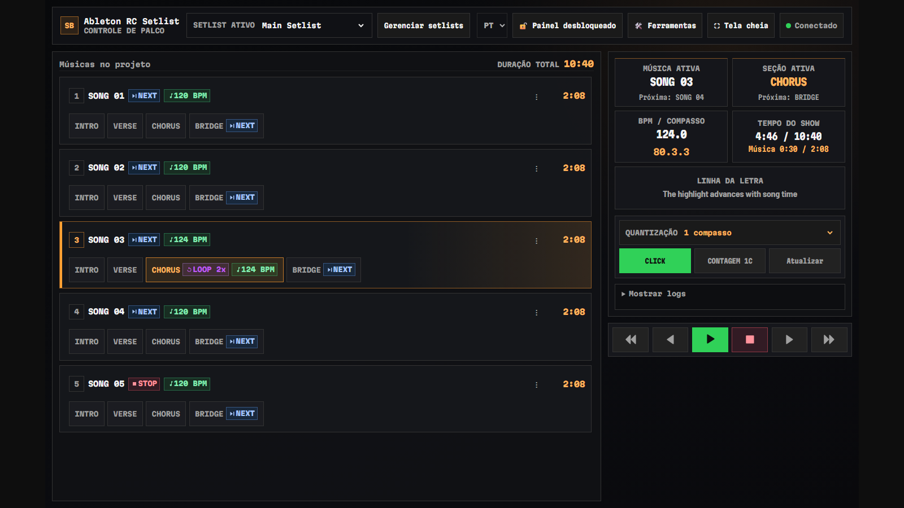
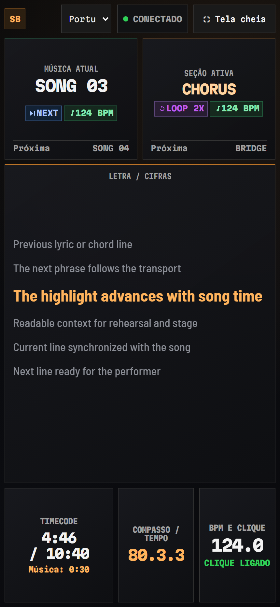

RC Setlist
Setlist, letra sincronizada e tela de palco para o Ableton Live 12 — grátis para uso não comercial.
Os locators do seu Arrangement viram o show: o setlist de quem opera, a tela de palco de quem toca. O Live manda no tempo; o navegador só acompanha.
- Live 12.4.5+ Suite (Beta)
- RC Bridge incluído
- Qualquer navegador da sua rede
- Sem conta · sem telemetria
Versão 1.0.0 · source-available sob a PolyForm Noncommercial 1.0.0 · inglês e português (Brasil) no mesmo pacote


Cadeia de sinal — quem manda no tempo é o Live
O Live toca; o RC Setlist lê a posição e pede os saltos; os navegadores só mostram o que o Live confirmou.
2.1 Do que você precisa
| Componente | Onde | Função |
|---|---|---|
| Live 12.4.5+ Suite (Beta) | O computador | Roda a extensão. O Arrangement é a referência de tudo. |
| RC Bridge | No Live, como Control Surface | Transporte, saltos e posição da música. Vem no kit; um AbletonOSC comum também funciona. |
| Um navegador | Notebook, tablet ou celular | Abre as duas telas por link ou QR code. Não precisa instalar nada. |
Locators — do Arrangement ao palco
Dê nome aos locators uma vez só. Músicas, seções e tags saem direto do Arrangement, e nada escondido é gravado no seu projeto.
Locators do Arrangement
Arraste o desenho para o lado para ver o set inteiro.
No Controle de palco — os cards que ele mostra
3.1 Tags disponíveis
| No locator | O que acontece | No card |
|---|---|---|
[bpm 120] |
Informa o BPM. As durações ficam exatas. | 120 BPM |
[click] [click off] |
Liga ou desliga o click (metrônomo) do Live nesse locator. | CLICK CLICK OFF |
[loop] [loop 2x] |
Repete a seção até você desligar o loop, ou N vezes. | LOOP 2x |
[next] |
Pula para a próxima música assim que o Live passa por esse locator. | NEXT |
[stop] |
Para o Live nesse locator. | STOP |
[skip] |
Pula esta música ou seção. | SKIP |
[jump Chorus] |
Pula para uma música ou seção pelo nome. | JUMP → Chorus |
[hidden] |
Esconde do setlist um locator usado só para automação. | — |
[ignore] |
Locator técnico: fica oculto e as tags dele não fazem nada. | — |
Tanto faz maiúscula ou minúscula, e as tags não aparecem no nome exibido. Fora [hidden] e [ignore], você nem precisa digitá-las: dê dois cliques numa música ou seção no Controle de palco e cada tag vira um controle.
3.2 Duração do set
Duas telas — figs. 4 a 6
O Controle de palco é de quem opera o show. A Performance é de quem toca: só leitura, alto contraste, dá para ler preso no pedestal do microfone.
Segurança no palco — nada dispara sem querer
Todo botão que pode parar o show precisa ser segurado, não só tocado. Nada de janela de confirmação no meio da música.
Saltos quantizados
O pedido de salto vai na hora para o Live, que executa no próximo tempo da grade.
Contagem de um compasso
Com a CONTAGEM ligada e o Live parado, o Play conta um compasso no próprio botão, no andamento definido no setlist, e dispara o Live no primeiro tempo. Por padrão é só visual: o celular nunca apita no palco.
Travado enquanto toca
Editar locators, trocar de setlist e mudar o idioma ficam bloqueados enquanto o Live toca.
Quedas de conexão
Uma reconexão mantém na tela o último estado válido e avisa, em vez de apagar tudo.
Instalação — cinco passos até o primeiro Play
-
Baixe
RC-Setlist-1.0.0.ablxe o kit de instalação, na versão mais recente. -
Instale o RC Bridge
Rode
Install-RC-Bridge.cmd(Windows) ouInstall RC Bridge.command(macOS), que vêm no kit. No Live, abra Settings › Link, Tempo & MIDI e escolha RCBridge como Control Surface. -
Instale a extensão
Abra o .ablx e aprove a instalação no Live.
-
Inicie o servidor
Abra Extensions › RC Setlist e clique em Iniciar. O painel mostra um link e um QR code para cada tela.
-
Abra as telas
Aponte a câmera para o QR code ou abra o link. Aceite o certificado local só se o endereço for o mesmo que o painel mostra.
Vem da 0.x? Rode uma vez o script de migração do kit antes de abrir o Live com a 1.0 — veja o guia de instalação. O Windows está validado; o macOS é experimental nesta versão.
Quando não funciona
7.1 Solução de problemas
O RC Setlist não aparece no Live
Confira o Live 12.4.5+ Suite (Beta). Abra o .ablx de novo, reinicie o Live, procure em Extensions.
O RCBridge não está na lista
O lugar dele é User Library/Remote Scripts/RCBridge — o instalador
do kit põe lá. Reinicie o Live uma vez.
O cursor não anda
Aperte Verificar OSC no painel; a linha de OSC diz qual script responde. Depois de instalar o RC Bridge, aperte Reiniciar.
Nenhuma música aparece
O Set precisa de locators no Arrangement. Primeiro as músicas; seções como
Música > Seção ou > Seção.
A página não abre
Use a mesma rede, e não a de convidados. Libere a porta TCP 4444 no firewall só para redes privadas.
Os controles estão bloqueados
Abra o link ou o QR code do controlador no painel: o token dele libera o transporte.
7.2 Perguntas frequentes
É grátis?
Sim, para uso não comercial: sem preço, sem conta e sem assinatura.
Mostra a letra no palco?
Sim. A letra sincronizada (.lrc) acompanha a música em qualquer celular, tablet ou notebook, e você marca o tempo das linhas no próprio navegador.
Funciona com playback e multitracks?
Sim. O Live continua tocando as suas faixas; o RC Setlist organiza o setlist, navega pelo Arrangement e mostra a letra.
Um app no celular?
Não. Qualquer navegador atual na mesma rede.
Preciso do AbletonOSC?
Não. O RC Bridge vem no kit e roda ao lado de um AbletonOSC comum ou do RC Surface.
Para onde vão os dados do show?
Para lugar nenhum. Setlists, letras e exportações ficam em perfis locais.
Por que a contagem não tem som?
Por padrão ela é só visual. Um notebook ligado no in-ear pode ativar o som, um aparelho por vez.
Session View?
Ainda não. Esta versão lê os locators do Arrangement.
Posso usar comercialmente?
Não. Use, altere e compartilhe para fins não comerciais, sob a PolyForm Noncommercial 1.0.0.